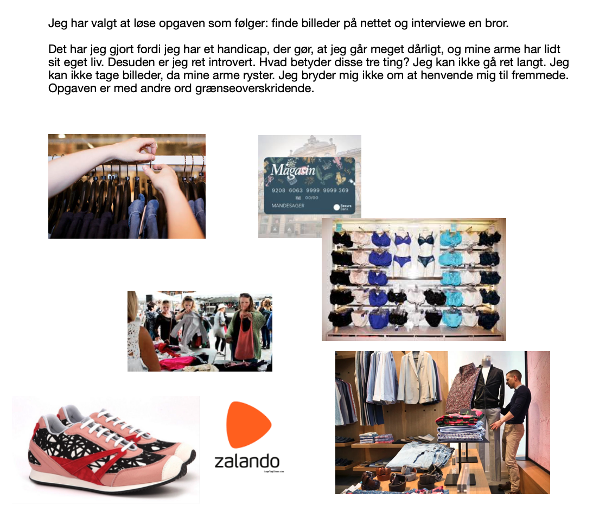
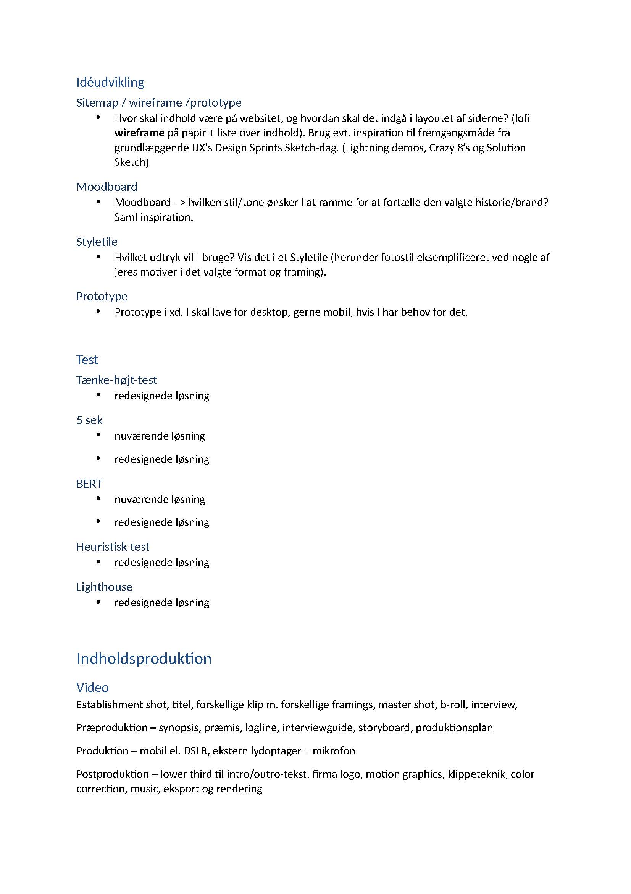
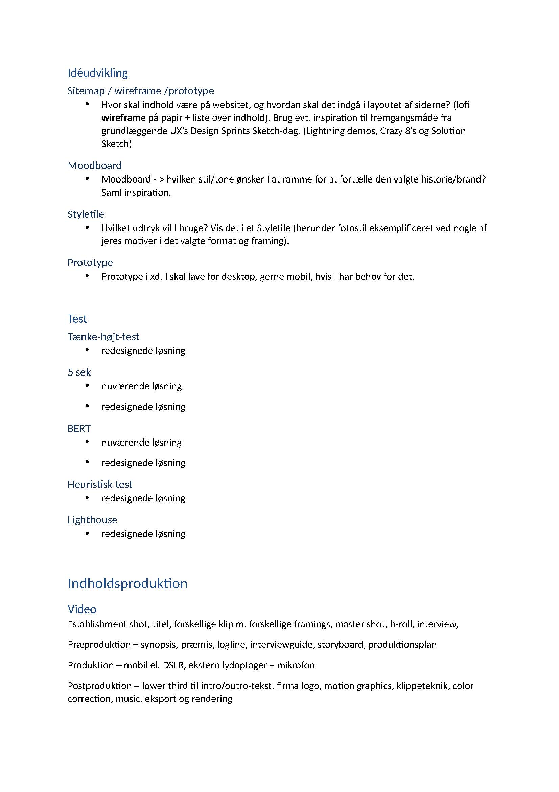

Tema 2
website
beskrivelse
For at opnå kompetencer indenfor website lærer jeg om arbejdsfiler og filformater til web. Vi udarbejder en website, bestående af 5 sider, på basis af udleveret materiale, samt benyttelse af to farver og en font. Det er en selvstændig opgave, og jeg fokuserede på et historisk tilbageblik med personlige præferencer. Jeg lærte at bruge layoutdiagram og kodning i HTML, samt CSS; et til styling og et til layout udefra et wireframe. Opgave nummer:02.01.02
process
layout diagram


wireferame
.png)


emnesite
beskrivelse
For at opnå kompetencer indenfor emnesite, bestående af 2-6 sider, hvor jeg skal jeg vide noget om ophavsret, licenser og metadata. Dernæst kodning, tools, billedbehandling og udvikling af mock-ups. Jeg valgte at fokusere på futurisme og rummet. Det var en selvstændig opgave, og jeg arbejdede udefra eget materiale. Værktøjet var HTML, photoshop, moodboard, stilesite, wireframes og XD. Jeg researchede på fonte, billeder, design og udtryk. Dernæst udvælgelse og indarbejdning af sitet. farver, typografi, marginer favicon Komposition/layout/grid Typografi og tekstlayout Billedstil/beskæring/farvejustering Gestalt Kontraster Opgave nummer: 02.02.01
process

moodboard

breakpoints og passende media querries
tema 3
I Tema 3 lærte vi om research metoderne observation, interview og survey. Observation: Man holder øje med en situation eller objekt og notér interaktionerne og hændelserne, der udspiller sig. Interview: Målet er at samle baggrundsviden og fakta omkring den interviewede person, så man kan stille de rigtige spørgsmål og få et nuanceret svar. Survey: Det er en måde at få samlet en masse information på, på engang. Jeg valgte gå med observations metoden, hvor jeg interviewede en person, der klikkede rundt på en hjemmeside for at købe tøj. Måden det blev løst på , var, at jeg lavede en prototype 1 udfra UI kits i adobe xd. Struktur og navigation linkede til 4 andre sider. Moodboardet og styletilet blev lavet ud fra ide og struktur til mit shopconcept, dernæst brugte jeg det til at finde min fotostil som blev udarbejdet i fotoshop. Jeg brugte copy og microcopy til at finde ud af, hvordan teksten bygges. Det hele udmundede i en prototype 2, der eventuelt blev den færdige side, der skulle observeres, som udmundede i en pitch til at løse den efterfølgende opgave på følgende måde.
<løsning
process
Heat map. Populære ide´er HARAKIRI. Jeg kan godt lide billedopsætningen under menuen, og over der, hvor der står shop
Speed critique. HER CHOICE. Dette er en beskrivelse af motiv og kunstner
DIT DESIGN. Sko guide pop up
HARAKIRI. Billedet under menuen.
EVERYDAY.DK Farve valg til t-shirt
Din solutionsketch / papirs-prototype Solution sketch 2 eller en papirs-prototype.
prototype1
moodboard/styletile
styletile

moodboard

copy/mmicrocpoy
Velkommen til wolffgang vi bestræber os på at være bæredygtige
mmicrocpoy
indledende tekst på en landingpage
fotostil
prototype2

beskrivelse
I opgaven “Løsning” var det målet at lave en side med tøj og finde fotostilarter. Det var en selvstændig opgave som jeg udførte ved at søge på nettet. Hermed fik jeg anvendt moodboard, stiletitle, copy og mikrocopy til fremtidig projekt. Opgave nummer: 03.02.02
opgave
pitch
beskrivelse
I opgaven “pitch” var det målet at fremlægge “Løsning”. Min rolle var mundtlig fremlæggelse, og jeg anvendte Powerpoint. Det var vigtig for mig at prøve at fremlægge, da jeg fysisk har store udfordringer i formidlingen. Opgave nummer 03.03.02.
process
forside
webshop titel
wolfgang
link til prototype
prototype
UX-designer
mig selv
illustration?
UX-research-hoved
Anslag
En hjemmeside med bæredygtige t-shirt
Status
Mangler info omkring tøjet
Den er mere organiseret
Der er en mere fokuseret stil
Udfordring
At hjemmeside prototypen lever op til den skitserede.
Informationer og indsigter fra researchen
Ifølge Danmarks Naturfredningsforening er konventionel bomuld fyldt med sprøjtegift og indeholder giftige farvestoffer, som kan optages af huden.
UX/UI-design – krop: løsning - ide (koncept og kreativ idé) og XD-prototype
Webshop og produkter
Webshop
Personer, der gerne vil ud med et budskab (eventuelt humoristisk) (Orginationer)
produkter
T-shirts
Målgruppe
Personer, der gerne vil ud med et budskab (eventuelt humoristisk) (Orginationer)
USP/ salgsargument
Bestræber os på at sælge t-shirts af god kvalitet
Produktegenskaber og fordele for kunder
Bomuld
Økologisk Bæredygtig
Designproces: skitse, moodboard, style tile
Gennemgang af XD-prototypen
Uddybning af visuelt indhold og copy
jeg har valgt at designe siden efter et dyr, der hedder axolotl.
Dyret kan findes i forskellige farver så som brun, sort, albino og den mest udbredte farve lyserød. Den kan hele sine egne lemmer og undgå metamorphis.
Velkommen til Wolffgang. Vi bestræber os på at være bæredygtige. Afspejlet i axolotlen, hvis habitat er truet.
3.UX-test – hale:
Konklusion og perspektiver.
Jeg skal blive bedre til at holde mig til min skitse.
Test (refleksion over tænke-højt-test).
The Five Act interview.
Friendly welcome.
Hej test-person, jeg takker dig for at deltage i den her test. Du skal bare vide, at jeg tester ikke dig, men mit design af hjemmeside.
Context questions Hvor gammel er du? Hvor bor du? Hvad har du af interesse? Hvad går du med af tøj? Går du op i bæredygtighed? Hvordan foretrækker du at shoppe?
Fremtidsperspektiver?
Få inkorporeret dyrets egenskaber og udseende i selve produktet.
tema 4
animation
I opgaven “animation” var målet et website med et interaktivt animeretspil af egen produktion. Dertil en dokumentation. I denne opgave skal jeg finde min egen rolle i designet, den interaktive proces, beslutningsprocessen og den forståelse, der skal være på plads omkring konventioner, prototypisk og testning. Der skal testes for brugeroplevelse, findes fotostil og billedbehandles i planlægning og produktion af indhold. Det var en selvstændig opgave, hvor jeg brugte følgende værktøjer: .mp3, .svg, CSS, JavaScript og illustrator. Jeg lærte at gå fra ide til skitse og udvikling. Udover figurelementer, baggrundsdesign og meget mere fra illustrator, så også genbrug fra Tema 3. Jeg lærte endelig at kunne udvikle mit eget spil. Javasciptet udfordrede mig en del, men jeg havde måske stillet for store krav til mig selv. Opgave nummer 04.04.01
process
skitser
første

state-machine-diagram

skitse

layoutdigram

dokumentation
forskærm

game over

start skærm

heart

level_complete

Tema 5
pilotsite
beskrivelse
I opgaven “pilotsite” var målet en website, der præsenterer en video. Det var en selvstændig opgave, der blev lavet på baggrund af gruppeinterviews. Jeg anvendte bl.a. HTML, YouTube, layoutdiagram, webfront, VSS og premiere. Jeg lærte bl.a. om filformater, videoredigering, videokodning, formidling, videoplatforme, storyboard, interviewstil, klippeteori og b-Roll. Opgaven gav mig kompetencer til gruppearbejdet. Opgave nummer 05.01.02
process
@font-face { font-family: "proxima_novaregular"; src: url("proxima_nova_font-webfont.woff") format("woff"); font-weight: normal; font-style: normal; }
layoutdiagram

redesign af american pie company
læringsmål
I opgaven “pilotsite” var målet en website, der præsenterer en video. Det var en selvstændig opgave, der blev lavet på baggrund af gruppeinterviews. Jeg anvendte bl.a. HTML, YouTube, layoutdiagram, webfront, CSS og premiere. Jeg lærte bl.a. om filformater, videoredigering, videokodning, formidling, videoplatforme, storyboard, interviewstil, klippeteori og b-Roll. Opgaven gav mig kompetencer til gruppearbejdet. Opgave nummer 05.01.02
process
wireframe
_Side_1.jpg)
_Side_2.jpg)
_Side_3.jpg)
_Side_4.jpg)
_Side_5.jpg)
Sketch


process


 


tema 6
beskrivelse
Jeg har anvendt mine gamle opgaver til at dokumentere processen og beskrive tillærte færdigheder.Jeg har været udfordret på min fysik, og har undervurderet den tid jeg gerne ville have brugt på særligt layout. jeg er blevet bedre til genvejstastetur :)